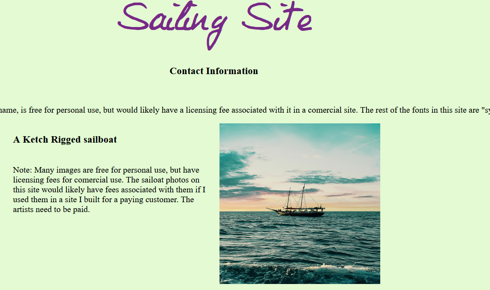
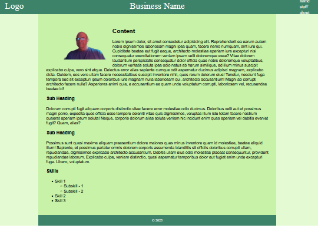

Disopinionated
In a sense, a protocol is like a fine wine, older is better. It is easy to fall into the trap of the new and shiny. We are conditioned to believe that the new is always beter, but often it is the well seasoned, timeless forms that yield the best results.
On the web, this idea is more true than ever. Your website should be built with the simplest possible technology that meets your needs. This avoids expensive rewrites because a bug was found in the "framework" used to build it. Your site should rely on clasic, well trusted design principles and protcols.
Simple is Smart
Keeping things as simple as posible has advantages. It lasts a long time. The websites I build should work just as well 20 years from now as they do when you take delivery. I keep things simple by using a well defined "stack" of protocols and languages. The stack I use is HTML/CSS/JS on the front end and Python/Flask with a database on the back end. This site is written using only the HTML/CSS/JS part of the stack. It is simple.
Main Page
Simplicity
The simplest sites are the least expensive. They use templates to create a rich visual experience for your content. The goal for these sites is to tell the story of your business and provide your contact information.
They are considered simple(somtimes called static sites) because they do not take in any data to store or mainipulate. They also do not have many custom features requiring extensive coding.
Templates
A sample of templates are listed below. They can be built with your content for about $100 per page. You can customize these templates with your own images and type styles. You can also add lists and headings that make your content easier to read.
All of the sites I build are both responsive and accessible. They work well with screen readers for the visualy impaired as well as mobile devices.
Main Page
Single Page Template
An example of a single page site template. It can be configured as a list of images with textual content or with only one column like a reusme.
Note: Many images are free for personal use, but have licensing fees for comercial use. The sailoat photos on this site would likely have fees associated with them if I used them in a site I built for a paying customer. The artists need to be paid.

Landing Page
T - Layout

Lateen Rigged
Sloop Rigged
Ropes and Rigging
Complex Websites
Complex websites have one or more of the follwing characteristics. They have a custom design that the developer needs to spend time implementing, or the customer has hired a designer to create a unique website and the developer has to spend time figuring out how to implement it. There is often a great deal of back and forth between the designer, customer and developer before the website is finished. The end product is often stunning.
Also included in this ctegory are sites that have complex data needs such as backend connectivity like a user input form, extensive Java Script(JS), or extensive Cascading Style Sheets(CSS).
Because of the above, these sites a billed by the hour. I will provide an estimate and communicate with the customer on the progress. This site for example is based on one of my templates, but it does have some extra CSS and a little JS. I desigend it myself. I would chage a premium over a simple template site, but it wouldn't be outrageous.
Designers
The most visualy apealing sites will be created by a designer. Designers have training and experrince in art and graphic design and can specify colors, fonts, images, logos, layouts, effects and more. The designer will create a "wire frame" for your site that specifies all of the above for me, the developer. In short, they create the design and the developer implements it. Designers sometimes use the marketing "branding expert" to identify themselves and can provide a "branding kit" containing the above that the customer can use for other things like signage, business cards and more.
I also desigend the logo myself. This is not a sevice that I offer. The customer will either need to hire a designer or use one of the free online logo generators.
Main Page
Data
Data or data processing is best explained by example. If you run a business with some spreadsheets, but maintaining those spreadsheets is getting more complex and time consuming, then data processing could be a solution for you. I can bridge the gap between large solution providers that are expensive and might not have the support for the industry you are in and spreadsheets.
I can automate the process of extracting data from a spreadsheet, doing some complex processing on the data and then returning the data that can then be imported back to a spreadsheet or displayed on a webpage. Displaying the data on a webpage on your intranet(not on the public internet), has the advantage of being available on mobile devices or on your production floor without having to buy licenses for spreadsheets.
There are many ways to accomplsh this and I have the ability to work with your exisitng staff and IT contractors help you arrive at a solution that can save you time and money as well as drive production eficiencies.
Tech Stack
A complex website often has two parts that work together to create the finished product. First is the front end. It is the part that you see, the layout, colors, images and text that are visible through the browser. The base techologies for the front end are HTML and CSS. JS is often used to create added visual interest and choose which text to display. JS allows the developer interact with the front-end in complex ways. The key idea to know is that all of the work on the front-end is done by the users computer. Data is only retrieved from the server through HTML files, very little data processing is done. The front-end is for displaying data. It is in "front" of the user.
If the site uses or manipulates data provided by the user or stores data for future use, then a back-end it needed. The combination of the two is called the "full stack". Back-end technolgies reside on the server and retrive data from the front-end and store or manipulate the data in some way. The Python programming language is very good for data manipulation while a database is most often used to store data. Most of the time an intermediary framework is used to mediate bewteen the database and the data mannipulation parts of the back-end. The framework I use most often is Flask. Doing the data manipulation and storage on the back-end has the advatages of security and gives the ability to share the data with other users, applications or processes.
There are other ways to process and display data but they are not web technoligies and are beyond the scope of this discussion. Other "stacks" are available, but the one listed above is one of the simplest and most relaible.
Main Page